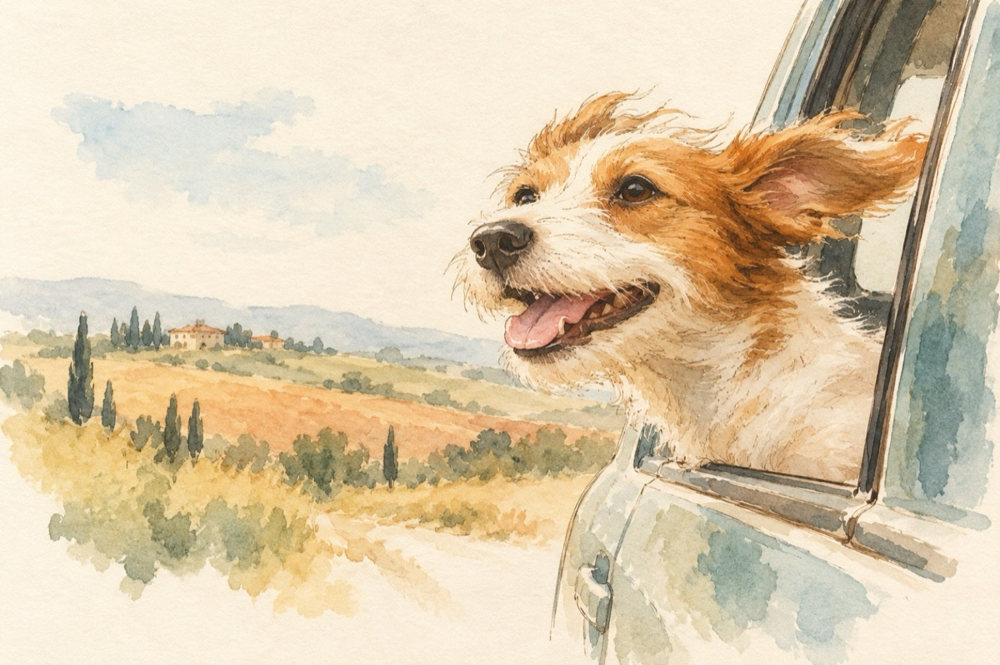

Aventurierul
Sunt un AS al mașinilor
La muzică sunt un mic Beethoven
Sunt admiratorul câmpiilor
La dans sunt un Fred Astaire!
Îmi place să mă bată vântu-n față
Când mă mângâie îmi dă drag de viață
Priviți cum umblă prin a mea frizură
Ce-mi dă un gând nebun de aventură!
Abia aștept să cobor din mașină
Unde cățeluși ca și mine să vină
Și-așa în marele grup format
O să ne-apucăm în cor de lătrat!...
Vasile Groza